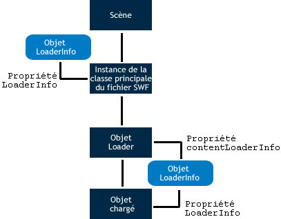

| Package | flash.display |
| Classe | public class LoaderInfo |
| Héritage | LoaderInfo |
| Version du langage: | ActionScript 3.0 |
| Versions du moteur d’exécution: | AIR 1.0, Flash Player 9, Flash Lite 4 |
Vous pouvez accéder aux objets LoaderInfo de deux façons :
- La propriété
contentLoaderInfod’un objet flash.display.Loader. La propriétécontentLoaderInforeste disponible quel que soit l’objet Loader. Si un objet Loader n’a pas appelé la méthodeload()ouloadBytes()ou que la proportion chargée n’est pas suffisante, tenter d’accéder à la plupart des propriétés decontentLoaderInforenvoie une erreur. - La propriété
loaderInfod’un objet d’affichage.
La propriété contentLoaderInfo d’un objet Loader fournit des informations sur le contenu chargé par cet objet, tandis que la propriété loaderInfo d’un objet DisplayObject propose des informations sur le fichier SWF racine correspondant à l’objet d’affichage.
Lorsque vous utilisez un objet Loader pour charger un objet d’affichage (par exemple, un fichier SWF ou une image bitmap), la propriété loaderInfo de l’objet d’affichage est la même que la propriété contentLoaderInfo de l’objet Loader (DisplayObject.loaderInfo = Loader.contentLoaderInfo). L’occurrence de la classe principale du fichier SWF ne disposant pas d’un objet Loader, la propriété loaderInfo est l’unique moyen dont elle dispose pour accéder à LoaderInfo.
Le diagramme ci-dessous indique les différentes utilisations de l’objet LoaderInfo pour l’occurrence de la classe principale du fichier SWF, pour la propriété contentLoaderInfo d’un objet Loader et pour la propriété loaderInfo d’un objet chargé :

Certaines propriétés de la propriété contentLoaderInfo d’un objet Loader ne sont pas disponibles tant que l’opération de chargement n’est pas terminée. Vous avez cependant accès à certaines propriétés, telles que bytesLoaded, bytesTotal, url, loaderURL et applicationDomain. Lorsque l’objet loaderInfo distribue l’événement init, vous pouvez accéder à toutes ses propriétésloaderInfo, ainsi qu’à l’image ou au fichier SWF chargés.
Remarque : toutes les propriétés des objets LoaderInfo sont accessibles en lecture seule.
La méthode EventDispatcher.dispatchEvent() ne s’applique pas aux objets LoaderInfo. Si vous appelez dispatchEvent() sur un objet LoaderInfo, une exception IllegalOperationError est renvoyée.
Plus d’exemples
Informations complémentaires
Eléments de l’API associés
flash.display.Loader.content
flash.display.DisplayObject
flash.display.DisplayObject.loaderInfo
 Masquer les propriétés publiques héritées
Masquer les propriétés publiques héritées Afficher les propriétés publiques héritées
Afficher les propriétés publiques héritées| Propriété | Défini par | ||
|---|---|---|---|
| actionScriptVersion : uint [lecture seule]
Version ActionScript du fichier SWF chargé. | LoaderInfo | ||
| applicationDomain : ApplicationDomain [lecture seule]
Lorsqu’un fichier SWF externe est chargé, toutes les définitions ActionScript 3.0 que contient la classe chargée sont enregistrées dans la propriété applicationDomain. | LoaderInfo | ||
| bytes : ByteArray [lecture seule]
Octets associés à un objet LoaderInfo. | LoaderInfo | ||
| bytesLoaded : uint [lecture seule]
Nombre d’octets chargés pour le média. | LoaderInfo | ||
| bytesTotal : uint [lecture seule]
Nombre d’octets compressés du fichier multimédias entier. | LoaderInfo | ||
| childAllowsParent : Boolean [lecture seule]
Exprime la relation de confiance qui lie le contenu (l’enfant) à l’objet Loader (le parent). | LoaderInfo | ||
| childSandboxBridge : Object
Un objet qui peut être définir par le code du contenu chargé pour exposer des propriétés et des méthodes auxquelles le code dans le sandbox de l’objet Loader peut accéder. | LoaderInfo | ||
 | constructor : Object
Référence à l’objet de classe ou à la fonction constructeur d’une occurrence donnée d’un objet. | Object | |
| content : DisplayObject [lecture seule]
Objet chargé associé à cet objet LoaderInfo. | LoaderInfo | ||
| contentType : String [lecture seule]
Type MIME du fichier chargé. | LoaderInfo | ||
| frameRate : Number [lecture seule]
Cadence nominale, en images par seconde, du fichier SWF chargé. | LoaderInfo | ||
| height : int [lecture seule]
Hauteur nominale du fichier chargé. | LoaderInfo | ||
| isURLInaccessible : Boolean [lecture seule]
Indique si la propriété LoaderInfo.url a été tronquée. | LoaderInfo | ||
| loader : Loader [lecture seule]
Objet Loader associé à cet objet LoaderInfo. | LoaderInfo | ||
| loaderURL : String [lecture seule]
URL du fichier SWF qui a initié le chargement du média décrit par l’objet LoaderInfo. | LoaderInfo | ||
| parameters : Object [lecture seule]
Objet contenant des paires nom-valeur qui représentent les paramètres fournis au fichier SWF chargé. | LoaderInfo | ||
| parentAllowsChild : Boolean [lecture seule]
Exprime la relation de confiance qui lie l’objet Loader (le parent) au contenu (l’enfant). | LoaderInfo | ||
| parentSandboxBridge : Object
Un objet qui peut être défini par le code dans le sandbox de l’objet Loader pour exposer les propriétés et les méthodes auxquelles le code du contenu chargé peut accéder. | LoaderInfo | ||
| sameDomain : Boolean [lecture seule]
Exprime la relation entre les domaines de l’objet loader et du contenu : true s’ils proviennent du même domaine ; false dans tous les autres cas. | LoaderInfo | ||
| sharedEvents : EventDispatcher [lecture seule]
Occurrence de EventDispatcher permettant d’échanger des événements hors des limites de sécurité. | LoaderInfo | ||
| swfVersion : uint [lecture seule]
Version du format du fichier SWF chargé. | LoaderInfo | ||
| uncaughtErrorEvents : UncaughtErrorEvents [lecture seule]
Objet qui distribue un événement uncaughtError lorsqu’une erreur non interceptée se produit dans le code du fichier SWF de cet objet LoaderInfo. | LoaderInfo | ||
| url : String [lecture seule]
URL du média en cours de chargement. | LoaderInfo | ||
| width : int [lecture seule]
Largeur nominale du contenu chargé. | LoaderInfo | ||
| Méthode | Défini par | ||
|---|---|---|---|
| addEventListener(type:String, listener:Function, useCapture:Boolean = false, priority:int = 0, useWeakReference:Boolean = false):void
Enregistre un objet écouteur d’événement auprès d’un objet EventDispatcher afin que l’écouteur soit averti d’un événement. | EventDispatcher | |
[statique]
Renvoie l’objet LoaderInfo associé à un fichier SWF défini sous forme d’objet. | LoaderInfo | ||
|
Vérifie si des écouteurs sont enregistrés auprès de l’objet EventDispatcher pour un type spécifique d’événement. | EventDispatcher | |
|
Indique si la propriété spécifiée d’un objet est définie. | Object | |
|
Indique si une occurrence de la classe Object figure dans la chaîne de prototype de l’objet spécifié en tant que paramètre. | Object | |
|
Indique si la propriété spécifiée existe et est énumérable. | Object | |
|
Supprime un écouteur de l’objet EventDispatcher. | EventDispatcher | |
|
Définit la disponibilité d’une propriété dynamique pour les opérations en boucle. | Object | |
|
Renvoie la représentation de chaîne de cet objet, formatée selon les paramètres régionaux en vigueur. | Object | |
|
Renvoie la représentation sous forme de chaîne de l’objet spécifié. | Object | |
|
Renvoie la valeur primitive de l’objet spécifié. | Object | |
|
Vérifie si un écouteur d’événement est enregistré auprès de cet objet EventDispatcher ou de ses ancêtres pour le type d’événement spécifié. | EventDispatcher | |
| Evénement | Synthèse | Défini par | ||
|---|---|---|---|---|
| [Evénement de diffusion] Distribué lorsque l’application Flash Player obtient le focus du système d’exploitation et devient active. | EventDispatcher | ||
| Distribué lorsque le chargement de données a abouti. | LoaderInfo | |||
| [Evénement de diffusion] Distribué lorsque l’application Flash Player ou AIR perd le focus du système d’exploitation et devient inactive. | EventDispatcher | ||
| Distribué lorsqu’une requête réseau est effectuée sur HTTP et qu’un code d’état HTTP peut être détecté. | LoaderInfo | |||
| Distribué lorsqu’il est possible d’accéder aux propriétés et aux méthodes d’un fichier SWF chargé et de les utiliser. | LoaderInfo | |||
| Distribué lorsqu’il se produit une erreur d’entrée ou de sortie entraînant l’échec d’une opération de chargement. | LoaderInfo | |||
| Distribué lors du démarrage d’une opération de chargement. | LoaderInfo | |||
| Distribué à la réception des données au fur et à mesure du téléchargement. | LoaderInfo | |||
| Distribué par un objet LoaderInfo lorsqu’un objet chargé est supprimé à l’aide de la méthode unload() de l’objet Loader ou lorsqu’un second chargement est effectué par le même objet Loader et que le contenu d’origine est supprimé avant le début du chargement. | LoaderInfo | |||
actionScriptVersion | propriété |
actionScriptVersion:uint [lecture seule] | Version du langage: | ActionScript 3.0 |
| Versions du moteur d’exécution: | AIR 1.0, Flash Player 9, Flash Lite 4 |
Version ActionScript du fichier SWF chargé. La version du langage est spécifiée par le biais des énumérations de la classe ActionScriptVersion, telles que ActionScriptVersion.ACTIONSCRIPT2 et ActionScriptVersion.ACTIONSCRIPT3.
Remarque : cette propriété possède toujours la valeur ActionScriptVersion.ACTIONSCRIPT2 ou ActionScriptVersion.ACTIONSCRIPT3. ActionScript 1.0 et 2.0 correspondent tous deux à ActionScriptVersion.ACTIONSCRIPT2 (version 2.0). Cette propriété se contente de distinguer ActionScript 1.0 et 2.0 d’ActionScript 3.0.
Implémentation
public function get actionScriptVersion():uintValeur émise
Error — Si le pourcentage téléchargé du fichier n’est pas suffisant pour extraire les informations requises.
| |
Error — Si le fichier n’est pas un fichier SWF.
|
Eléments de l’API associés
applicationDomain | propriété |
applicationDomain:ApplicationDomain [lecture seule] | Version du langage: | ActionScript 3.0 |
| Versions du moteur d’exécution: | AIR 1.0, Flash Player 9, Flash Lite 4 |
Lorsqu’un fichier SWF externe est chargé, toutes les définitions ActionScript 3.0 que contient la classe chargée sont enregistrées dans la propriété applicationDomain.
L’ensemble du code d’un fichier SWF est défini de sorte à exister dans un domaine d’application. Votre application principale s’exécute dans le domaine d’application en cours. Le domaine du système contient tous les domaines d’application, y compris le domaine actuel et toutes les classes utilisées par Flash Player ou Adobe AIR.
A l’exception du domaine du système, tous les domaines d’application sont associés à un domaine du parent. Le domaine du parent de la propriété applicationDomain de votre application principale est le domaine système. Les classes chargées ne sont définies que si leur parent ne les définit pas encore. Vous ne pouvez pas remplacer une définition de classe chargée par une définition plus récente.
Pour obtenir des exemples d’utilisation de domaines d’application, voir le chapitre « Environnement du système client » du Guide du développeur d’ActionScript 3.0.
Implémentation
public function get applicationDomain():ApplicationDomainValeur émise
SecurityError — Ce sandbox de sécurité de l’appelant n’est pas autorisé à accéder à la propriété ApplicationDomain.
|
Plus d’exemples
Informations complémentaires
Eléments de l’API associés
bytes | propriété |
bytes:ByteArray [lecture seule] | Version du langage: | ActionScript 3.0 |
| Versions du moteur d’exécution: | AIR 1.0, Flash Player 9.0.115.0, Flash Lite 4 |
Octets associés à un objet LoaderInfo.
Implémentation
public function get bytes():ByteArrayValeur émise
SecurityError — Si l’objet qui accède à cette API ne peut pas accéder à l’objet chargé en raison de restrictions de sécurité. Ce cas de figure se produit par exemple lorsqu’un fichier Loader tente d’accéder à la propriété contentLoaderInfo.content et n’est pas autorisé à accéder au contenu chargé.
Pour plus d’informations concernant la sécurité, voir la rubrique du Pôle de développement Flash Player : Sécurité (disponible en anglais uniquement). |
bytesLoaded | propriété |
bytesLoaded:uint [lecture seule] | Version du langage: | ActionScript 3.0 |
| Versions du moteur d’exécution: | AIR 1.0, Flash Player 9, Flash Lite 4 |
Nombre d’octets chargés pour le média. Lorsque ce nombre atteint la valeur de bytesTotal, tous les octets sont chargés.
Implémentation
public function get bytesLoaded():uintbytesTotal | propriété |
bytesTotal:uint [lecture seule] | Version du langage: | ActionScript 3.0 |
| Versions du moteur d’exécution: | AIR 1.0, Flash Player 9, Flash Lite 4 |
Nombre d’octets compressés du fichier multimédias entier.
Avant la distribution du premier événement progress par l’objet Loader correspondant de cet objet LoaderInfo, bytesTotal est défini sur 0. Après la distribution du premier événement progress par l’objet Loader, bytesTotal reflète le nombre réel d’octets à télécharger.
Remarque (iOS uniquement) : lors de l’exécution d’une application sur iOS, la valeur renvoyée n’est pas la même que sur les autres plates-formes.
Implémentation
public function get bytesTotal():uintEléments de l’API associés
childAllowsParent | propriété |
childAllowsParent:Boolean [lecture seule] | Version du langage: | ActionScript 3.0 |
| Versions du moteur d’exécution: | AIR 1.0, Flash Player 9, Flash Lite 4 |
Exprime la relation de confiance qui lie le contenu (l’enfant) à l’objet Loader (le parent). Renvoie true si l’enfant a autorisé l’accès du parent, false dans le cas contraire. Cette propriété est définie sur true si l’objet enfant a appelé la méthode allowDomain() pour accorder une autorisation d’accès au domaine parent, ou si un fichier de régulation d’URL chargé dans le domaine enfant accorde une autorisation d’accès au domaine parent. Si l’enfant et le parent appartiennent au même domaine, cette propriété est réglée sur true.
Pour plus d’informations sur la sécurité, voir la rubrique « Modifications du fichier de régulation dans Flash Player » dans le Centre des développeurs Flash Player à l’adresse Security.
Implémentation
public function get childAllowsParent():BooleanValeur émise
Error — Exception renvoyée si le pourcentage téléchargé du fichier n’est pas suffisant pour extraire les informations requises.
|
childSandboxBridge | propriété |
childSandboxBridge:Object| Versions du moteur d’exécution: | AIR 1.0, Flash Player 11.4, Flash Lite 4 |
Un objet qui peut être définir par le code du contenu chargé pour exposer des propriétés et des méthodes auxquelles le code dans le sandbox de l’objet Loader peut accéder. Ce pont de sandbox permet au contenu d’un domaine qui n’est pas un domaine d’application de bénéficier d’un accès contrôlé aux scripts dans le sandbox de l’application, et inversement. Le pont de sandbox sert de passerelle entre les sandboxes, fournissant une interaction explicite entre les sandboxes de sécurité de l’application et les autres.
Implémentation
public function get childSandboxBridge():Object public function set childSandboxBridge(value:Object):voidValeur émise
SecurityError — Seul le contenu dans le sandbox du contenu chargé peut définir cette propriété.
|
Eléments de l’API associés
content | propriété |
content:DisplayObject [lecture seule] | Version du langage: | ActionScript 3.0 |
| Versions du moteur d’exécution: | AIR 1.0, Flash Player 9, Flash Lite 4 |
Objet chargé associé à cet objet LoaderInfo.
Implémentation
public function get content():DisplayObjectValeur émise
SecurityError — Si l’objet qui accède à cette API ne peut pas accéder à l’objet chargé en raison de restrictions de sécurité. Ce cas de figure se produit par exemple lorsqu’un fichier Loader tente d’accéder à la propriété contentLoaderInfo.content et n’est pas autorisé à accéder au contenu chargé.
Pour plus d’informations sur la sécurité, voir la rubrique « Modifications du fichier de régulation dans Flash Player » dans le Centre des développeurs Flash Player à l’adresse Security. |
contentType | propriété |
contentType:String [lecture seule] | Version du langage: | ActionScript 3.0 |
| Versions du moteur d’exécution: | AIR 1.0, Flash Player 9, Flash Lite 4 |
Type MIME du fichier chargé. Le paramètre est défini sur null si le pourcentage chargé du fichier est insuffisant pour déterminer le type. La liste suivante répertorie les valeurs gérées :
"application/x-shockwave-flash""image/jpeg""image/gif""image/png"
Implémentation
public function get contentType():StringframeRate | propriété |
frameRate:Number [lecture seule] | Version du langage: | ActionScript 3.0 |
| Versions du moteur d’exécution: | AIR 1.0, Flash Player 9, Flash Lite 4 |
Cadence nominale, en images par seconde, du fichier SWF chargé. Cette valeur correspond souvent, mais pas nécessairement, à un entier.
Elle peut être différente de la cadence utilisée. Flash Player ou Adobe AIR utilise la même cadence pour tous les fichiers SWF chargés. Cette valeur est déterminée par la cadence nominale du fichier SWF principal. De même, la cadence principale risque de ne pas pouvoir être atteinte, selon le matériel, la synchronisation du son, et d’autres facteurs.
Implémentation
public function get frameRate():NumberValeur émise
Error — Si le pourcentage téléchargé du fichier n’est pas suffisant pour extraire les informations requises.
| |
Error — Si le fichier n’est pas un fichier SWF.
|
height | propriété |
height:int [lecture seule] | Version du langage: | ActionScript 3.0 |
| Versions du moteur d’exécution: | AIR 1.0, Flash Player 9, Flash Lite 4 |
Hauteur nominale du fichier chargé. Elle peut être différente de la hauteur réelle du contenu affiché, car le contenu chargé ou ses objets d’affichage parent risquent d’avoir été redimensionnés.
Implémentation
public function get height():intValeur émise
Error — Si le pourcentage téléchargé du fichier n’est pas suffisant pour extraire les informations requises.
|
isURLInaccessible | propriété |
isURLInaccessible:Boolean [lecture seule] | Version du langage: | ActionScript 3.0 |
| Versions du moteur d’exécution: | Flash Player 10.1, AIR 2 |
Indique si la propriété LoaderInfo.url a été tronquée. Lorsque la valeur isURLInaccessible est définie sur true, la valeur LoaderInfo.url correspond uniquement au domaine de l’URL finale à partir de laquelle le contenu a été chargé. Par exemple, la propriété est tronquée si le contenu est chargé depuis http://www.adobe.com/assets/hello.swf, et la propriété LoaderInfo.url a la valeur http://www.adobe.com. La valeur isURLInaccessible est définie sur true uniquement lorsque toutes les affirmations suivantes sont également vraies :
- Une redirection HTTP s’est produite lors du chargement du contenu.
- Le fichier SWF qui appelle
Loader.load()provient d’un domaine différent de celui de l’URL finale du contenu. - Le fichier SWF qui appelle
Loader.load()n’est pas autorisé à accéder au contenu. L’autorisation d’accéder au contenu s’obtient de la même façon que l’autorisation d’accéder àBitmapData.draw(): appelezSecurity.allowDomain()pour accéder à un fichier SWF (ou pour le contenu des fichiers non SWF, créez un fichier de régulation et utilisez la propriétéLoaderContext.checkPolicyFile).
Remarque : la propriété isURLInaccessible a été ajoutée à Flash Player 10.1 et AIR 2.0. Toutefois, cette propriété est disponible pour les fichiers SWF de toutes les versions lorsque le moteur d’exécution de Flash la prend en charge. Ainsi, l’utilisation de certains outils de création en « mode strict » entraîne une erreur de compilation. Pour contourner cette erreur, utilisez la syntaxe indirecte myLoaderInfo["isURLInaccessible"] ou désactivez le mode strict. Si vous utilisez Flash Professional CS5 ou le kit SDK Flex version 4.1, vous pouvez utiliser et compiler cette API pour les moteurs d’exécution publiés avant Flash Player 10.1 et AIR 2.
Pour le contenu de l’application dans AIR, la valeur de cette propriété est toujours false.
Implémentation
public function get isURLInaccessible():BooleanEléments de l’API associés
loader | propriété |
loader:Loader [lecture seule] | Version du langage: | ActionScript 3.0 |
| Versions du moteur d’exécution: | AIR 1.0, Flash Player 9, Flash Lite 4 |
Objet Loader associé à cet objet LoaderInfo. Si cet objet LoaderInfo figure dans la propriété loaderInfo de l’occurrence de la classe principale du fichier SWF, il n’est associé à aucun objet Loader.
Implémentation
public function get loader():LoaderValeur émise
SecurityError — Si l’objet qui accède à cette API ne peut pas accéder à l’objet Loader en raison de restrictions de sécurité. Ce cas de figure se produit par exemple lorsqu’un fichier SWF chargé tente d’accéder à sa propriété loaderInfo.loader et n’est pas autorisé à accéder au fichier SWF en cours de chargement.
Pour plus d’informations sur la sécurité, voir la rubrique « Modifications du fichier de régulation dans Flash Player » dans le Centre des développeurs Flash Player à l’adresse Security. |
loaderURL | propriété |
loaderURL:String [lecture seule] | Version du langage: | ActionScript 3.0 |
| Versions du moteur d’exécution: | AIR 1.0, Flash Player 9, Flash Lite 4 |
URL du fichier SWF qui a initié le chargement du média décrit par l’objet LoaderInfo. Pour l’occurrence de la classe principale du fichier SWF, cette URL correspond à l’URL du fichier SWF.
Implémentation
public function get loaderURL():Stringparameters | propriété |
parameters:Object [lecture seule] | Version du langage: | ActionScript 3.0 |
| Versions du moteur d’exécution: | AIR 1.0, Flash Player 9, Flash Lite 4 |
Objet contenant des paires nom-valeur qui représentent les paramètres fournis au fichier SWF chargé.
L’utilisation d’une boucle for-in vous permet d’extraire tous les noms et toutes les valeurs de l’objet parameters.
Les deux sources de paramètres sont : la chaîne de requête que contient l’URL du fichier SWF principal et la valeur du paramètre HTML FlashVars (qui n’affecte que le fichier SWF principal).
La propriété parameters remplace la technique ActionScript 1.0 et 2.0 qui consistait à utiliser des paramètres de fichier SWF en tant que propriétés du scénario principal.
La valeur de la propriété parameters est null pour les objets Loader qui contiennent des fichiers SWF qui utilisent ActionScript 1.0 ou 2.0. Elle est différente de null pour les objets Loader qui contiennent des fichiers SWF ayant recours à ActionScript 3.0.
Implémentation
public function get parameters():ObjectparentAllowsChild | propriété |
parentAllowsChild:Boolean [lecture seule] | Version du langage: | ActionScript 3.0 |
| Versions du moteur d’exécution: | AIR 1.0, Flash Player 9, Flash Lite 4 |
Exprime la relation de confiance qui lie l’objet Loader (le parent) au contenu (l’enfant). Renvoie true si le parent a autorisé l’accès de l’enfant, false dans le cas contraire. Cette propriété est définie sur true si l’objet parent a appelé la méthode allowDomain() pour accorder une autorisation d’accès au domaine enfant, ou si un fichier de régulation d’URL chargé dans le domaine parent accorde une autorisation d’accès au domaine enfant. Si l’enfant et le parent appartiennent au même domaine, cette propriété est réglée sur true.
Pour plus d’informations sur la sécurité, voir la rubrique « Modifications du fichier de régulation dans Flash Player » dans le Centre des développeurs Flash Player à l’adresse Security.
Implémentation
public function get parentAllowsChild():BooleanValeur émise
Error — Exception renvoyée si le pourcentage téléchargé du fichier n’est pas suffisant pour extraire les informations requises.
|
parentSandboxBridge | propriété |
parentSandboxBridge:Object| Versions du moteur d’exécution: | AIR 1.0, Flash Player 11.4, Flash Lite 4 |
Un objet qui peut être défini par le code dans le sandbox de l’objet Loader pour exposer les propriétés et les méthodes auxquelles le code du contenu chargé peut accéder. Ce pont de sandbox permet au contenu d’un domaine qui n’est pas un domaine d’application de bénéficier d’un accès contrôlé aux scripts dans le sandbox de l’application, et inversement. Le pont de sandbox sert de passerelle entre les sandboxes, fournissant une interaction explicite entre les sandboxes de sécurité de l’application et les autres.
Implémentation
public function get parentSandboxBridge():Object public function set parentSandboxBridge(value:Object):voidValeur émise
SecurityError — Seul le contenu dans le sandbox de l’objet Loader peut définir cette propriété.
|
Eléments de l’API associés
sameDomain | propriété |
sameDomain:Boolean [lecture seule] | Version du langage: | ActionScript 3.0 |
| Versions du moteur d’exécution: | AIR 1.0, Flash Player 9, Flash Lite 4 |
Exprime la relation entre les domaines de l’objet loader et du contenu : true s’ils proviennent du même domaine ; false dans tous les autres cas.
Implémentation
public function get sameDomain():BooleanValeur émise
Error — Exception renvoyée si le pourcentage téléchargé du fichier n’est pas suffisant pour extraire les informations requises.
|
sharedEvents | propriété |
sharedEvents:EventDispatcher [lecture seule] | Version du langage: | ActionScript 3.0 |
| Versions du moteur d’exécution: | AIR 1.0, Flash Player 9, Flash Lite 4 |
Occurrence de EventDispatcher permettant d’échanger des événements hors des limites de sécurité. Même lorsque l’objet Loader et le contenu chargé proviennent de domaines de sécurité qui ne s’approuvent pas, ils peuvent accéder à sharedEvents ainsi qu’envoyer et recevoir des événements via cet objet.
Implémentation
public function get sharedEvents():EventDispatcherswfVersion | propriété |
swfVersion:uint [lecture seule] | Version du langage: | ActionScript 3.0 |
| Versions du moteur d’exécution: | AIR 1.0, Flash Player 9, Flash Lite 4 |
Version du format du fichier SWF chargé. Le format du fichier est spécifié par le biais des énumérations de la classe SWFVersion, telles que SWFVersion.FLASH7 et SWFVersion.FLASH9.
Implémentation
public function get swfVersion():uintValeur émise
Error — Si le pourcentage téléchargé du fichier n’est pas suffisant pour extraire les informations requises.
| |
Error — Si le fichier n’est pas un fichier SWF.
|
Eléments de l’API associés
uncaughtErrorEvents | propriété |
uncaughtErrorEvents:UncaughtErrorEvents [lecture seule] | Version du langage: | ActionScript 3.0 |
| Versions du moteur d’exécution: | Flash Player 10.1, AIR 2 |
Objet qui distribue un événement uncaughtError lorsqu’une erreur non interceptée se produit dans le code du fichier SWF de cet objet LoaderInfo. Une erreur non interceptée se produit lorsqu’une erreur est renvoyée en dehors de tout bloc try..catch ou lorsqu’un objet ErrorEvent est distribué avec aucun écouteur enregistré.
Par exemple, si dans un bloc try, un diffuseur d’événements appelle son gestionnaire d’événements, le bloc catch n’intercepte pas l’erreur si elle est renvoyée dans le gestionnaire d’événements. Toute erreur renvoyée peut être interceptée en écoutant LoaderInfo.uncaughtErrorEvents
Cette propriété est créée à la fin du chargement du fichier SWF associé à cet objet LoaderInfo. Tant que la propriété uncaughtErrorEvents n’est pas définie sur null, Dans un projet ActionScript uniquement, vous pouvez accéder à cette propriété pendant ou après l’exécution de la fonction constructeur de la classe principale du fichier SWF. Pour un projet Flex, la propriété uncaughtErrorEvents n’est disponible qu’une fois l’événement applicationComplete distribué.
Implémentation
public function get uncaughtErrorEvents():UncaughtErrorEventsEléments de l’API associés
Exemple ( Comment utiliser cet exemple )
uncaughtError pour détecter les erreurs non interceptées. Il fournit également un bouton qui, lorsque l’utilisateur clique dessus, renvoie une erreur qui est ensuite interceptée par le gestionnaire d’événement uncaughtError.
Dans le constructeur, le code enregistre un écouteur pour l’événement uncaughtError distribué par la propriété uncaughtErrorEvents de l’objet LoaderInfo.
Dans la méthode uncaughtErrorHandler(), le code vérifie le type de données de la propriété error et répond en conséquence.
package
{
import flash.display.Sprite;
import flash.events.ErrorEvent;
import flash.events.MouseEvent;
import flash.events.UncaughtErrorEvent;
public class UncaughtErrorEventExample extends Sprite
{
public function UncaughtErrorEventExample()
{
loaderInfo.uncaughtErrorEvents.addEventListener(UncaughtErrorEvent.UNCAUGHT_ERROR, uncaughtErrorHandler);
drawUI();
}
private function uncaughtErrorHandler(event:UncaughtErrorEvent):void
{
if (event.error is Error)
{
var error:Error = event.error as Error;
// do something with the error
}
else if (event.error is ErrorEvent)
{
var errorEvent:ErrorEvent = event.error as ErrorEvent;
// do something with the error
}
else
{
// a non-Error, non-ErrorEvent type was thrown and uncaught
}
}
private function drawUI():void
{
var btn:Sprite = new Sprite();
btn.graphics.clear();
btn.graphics.beginFill(0xFFCC00);
btn.graphics.drawRect(0, 0, 100, 50);
btn.graphics.endFill();
addChild(btn);
btn.addEventListener(MouseEvent.CLICK, clickHandler);
}
private function clickHandler(event:MouseEvent):void
{
throw new Error("Gak!");
}
}
}
<?xml version="1.0" encoding="utf-8"?>
<s:WindowedApplication xmlns:fx="http://ns.adobe.com/mxml/2009"
xmlns:s="library://ns.adobe.com/flex/spark"
xmlns:mx="library://ns.adobe.com/flex/halo"
applicationComplete="applicationCompleteHandler();">
<fx:Script>
<![CDATA[
import flash.events.ErrorEvent;
import flash.events.MouseEvent;
import flash.events.UncaughtErrorEvent;
private function applicationCompleteHandler():void
{
loaderInfo.uncaughtErrorEvents.addEventListener(UncaughtErrorEvent.UNCAUGHT_ERROR, uncaughtErrorHandler);
}
private function uncaughtErrorHandler(event:UncaughtErrorEvent):void
{
if (event.error is Error)
{
var error:Error = event.error as Error;
// do something with the error
}
else if (event.error is ErrorEvent)
{
var errorEvent:ErrorEvent = event.error as ErrorEvent;
// do something with the error
}
else
{
// a non-Error, non-ErrorEvent type was thrown and uncaught
}
}
private function clickHandler(event:MouseEvent):void
{
throw new Error("Gak!");
}
]]>
</fx:Script>
<s:Button label="Cause Error" click="clickHandler(event);"/>
</s:WindowedApplication>
url | propriété |
url:String [lecture seule] | Version du langage: | ActionScript 3.0 |
| Versions du moteur d’exécution: | AIR 1.0, Flash Player 9, Flash Lite 4 |
URL du média en cours de chargement.
Avant la distribution du premier événement progress par l’objet Loader correspondant associé à cet objet LoaderInfo, la valeur de la propriété url risque de ne refléter que l’URL initiale spécifiée par l’appel de la méthode load() de l’objet Loader. Après la distribution du premier événement progress, la propriété url reflète l’URL finale du média, suite à la résolution de toute redirection et URL relative.
Dans certains cas, la valeur de la propriété url est tronquée. Voir la propriété isURLInaccessible pour plus d’informations.
Implémentation
public function get url():StringEléments de l’API associés
width | propriété |
width:int [lecture seule] | Version du langage: | ActionScript 3.0 |
| Versions du moteur d’exécution: | AIR 1.0, Flash Player 9, Flash Lite 4 |
Largeur nominale du contenu chargé. Elle peut être différente de la largeur réelle du contenu affiché, car le contenu chargé ou ses objets d’affichage parent risquent d’avoir été redimensionnés.
Implémentation
public function get width():intValeur émise
Error — Si le pourcentage téléchargé du fichier n’est pas suffisant pour extraire les informations requises.
|
getLoaderInfoByDefinition | () | méthode |
public static function getLoaderInfoByDefinition(object:Object):LoaderInfo| Version du langage: | ActionScript 3.0 |
| Versions du moteur d’exécution: | AIR 1.0, Flash Player 9.0.115.0, Flash Lite 4 |
Renvoie l’objet LoaderInfo associé à un fichier SWF défini sous forme d’objet.
Paramètres
object:Object — L’objet pour lequel vous souhaitez obtenir un objet LoaderInfo associé.
|
LoaderInfo — Objet LoaderInfo associé. Renvoie null lorsqu’il est appelé dans des versions qui ne sont pas des versions débogueur (ou lorsque le débogage est désactivé) ou si l’objet référencé n’a pas d’objet LoaderInfo associé (comme certains objets utilisés par le moteur d’exécution AIR).
|
Valeur émise
SecurityError — L’appelant n’est pas exécuté dans le sandbox approuvé local.
|
complete | Evénement |
flash.events.Eventpropriété Event.type =
flash.events.Event.COMPLETE| Version du langage: | ActionScript 3.0 |
| Versions du moteur d’exécution: | AIR 1.0, Flash Player 9, Flash Lite 4 |
Distribué lorsque le chargement de données aboutit. En d’autres termes, il est distribué lorsque tout le contenu a été téléchargé et une fois le chargement terminé. L’événement complete est toujours distribué après l’événement init. L’événement init est distribué lorsque vous pouvez accéder à l’objet, même si le contenu est en cours de téléchargement.
Event.COMPLETE définit la valeur de la propriété type d’un objet événement complete.
Les propriétés de cet événement sont les suivantes :
| Propriété | Valeur |
|---|---|
bubbles | false |
cancelable | false ; il n’existe aucun comportement par défaut à annuler. |
currentTarget | L’objet qui traite activement l’objet Event avec un écouteur d’événements. |
target | Objet réseau dont le chargement est terminé. |
Eléments de l’API associés
httpStatus | Evénement |
flash.events.HTTPStatusEventpropriété HTTPStatusEvent.type =
flash.events.HTTPStatusEvent.HTTP_STATUS| Version du langage: | ActionScript 3.0 |
| Versions du moteur d’exécution: | AIR 1.0, Flash Player 9, Flash Lite 4 |
Distribué lorsqu’une requête réseau est effectuée sur HTTP et qu’un code d’état HTTP peut être détecté.
La constanteHTTPStatusEvent.HTTP_STATUS définit la valeur de la propriété type d’un objet événement httpStatus.
Les propriétés de cet événement sont les suivantes :
| Propriété | Valeur |
|---|---|
bubbles | false |
cancelable | false ; il n’existe aucun comportement par défaut à annuler. |
currentTarget | L’objet qui traite activement l’objet Event avec un écouteur d’événements. |
status | Le code d’état HTTP renvoyé par le serveur. |
target | L’objet réseau recevant un code d’état HTTP. |
Eléments de l’API associés
init | Evénement |
flash.events.Eventpropriété Event.type =
flash.events.Event.INIT| Version du langage: | ActionScript 3.0 |
| Versions du moteur d’exécution: | AIR 1.0, Flash Player 9, Flash Lite 4 |
Distribué lorsqu’il est possible d’accéder aux propriétés et aux méthodes d’un fichier SWF chargé et de les utiliser. Il est néanmoins toujours possible de télécharger le contenu. Un objet LoaderInfo distribue l’événement init lorsque les conditions suivantes sont remplies :
- Il est possible d’accéder à toutes les propriétés et méthodes associées à l’objet chargé et celles associées à l’objet LoaderInfo.
- L’exécution des constructeurs de tous les objets enfant est terminée.
- Le code ActionScript contenu dans la première image du scénario principal du fichier SWF chargé a été exécuté.
Par exemple, un événement Event.INIT est distribué lorsque la première image d’un clip ou d’une animation est chargée. Vous pouvez alors accéder au clip et l’ajouter à la liste d’affichage. Il est toutefois possible que le téléchargement du clip complet soit un peu plus long. L’événement Event.COMPLETE n’est distribué que lorsque le clip complet est chargé.
L’événement init précède toujours l’événement complete.
Event.INIT définit la valeur de la propriété type d’un objet événement init.
Les propriétés de cet événement sont les suivantes :
| Propriété | Valeur |
|---|---|
bubbles | false |
cancelable | false ; il n’existe aucun comportement par défaut à annuler. |
currentTarget | L’objet qui traite activement l’objet Event avec un écouteur d’événements. |
target | Objet LoaderInfo associé au fichier SWF en cours de chargement. |
Eléments de l’API associés
ioError | Evénement |
flash.events.IOErrorEventpropriété IOErrorEvent.type =
flash.events.IOErrorEvent.IO_ERROR| Version du langage: | ActionScript 3.0 |
| Versions du moteur d’exécution: | AIR 1.0, Flash Player 9, Flash Lite 4 |
Distribué lorsqu’il se produit une erreur d’entrée ou de sortie entraînant l’échec d’une opération de chargement.
Définit la valeur de la propriététype d’un objet d’événement ioError.
Les propriétés de cet événement sont les suivantes :
| Propriété | Valeur |
|---|---|
bubbles | false |
cancelable | false ; il n’existe aucun comportement par défaut à annuler. |
currentTarget | L’objet qui traite activement l’objet Event avec un écouteur d’événements. |
errorID | Un numéro de référence associé à l’erreur spécifique (AIR uniquement). |
target | Objet réseau sur lequel l’erreur d’entrée/sortie s’est produite. |
text | Texte à afficher en tant que message d’erreur. |
Eléments de l’API associés
open | Evénement |
flash.events.Eventpropriété Event.type =
flash.events.Event.OPEN| Version du langage: | ActionScript 3.0 |
| Versions du moteur d’exécution: | AIR 1.0, Flash Player 9, Flash Lite 4 |
Distribué lors du démarrage d’une opération de chargement.
La constanteEvent.OPEN définit la valeur de la propriété type d’un objet événement open.
Les propriétés de cet événement sont les suivantes :
| Propriété | Valeur |
|---|---|
bubbles | false |
cancelable | false ; il n’existe aucun comportement par défaut à annuler. |
currentTarget | L’objet qui traite activement l’objet Event avec un écouteur d’événements. |
target | Objet réseau qui a ouvert une connexion. |
Eléments de l’API associés
progress | Evénement |
flash.events.ProgressEventpropriété ProgressEvent.type =
flash.events.ProgressEvent.PROGRESS| Version du langage: | ActionScript 3.0 |
| Versions du moteur d’exécution: | AIR 1.0, Flash Player 9, Flash Lite 4 |
Distribué à la réception des données au fur et à mesure du téléchargement.
Définit la valeur de la propriététype d’un objet événement progress.
Les propriétés de cet événement sont les suivantes :
| Propriété | Valeur |
|---|---|
bubbles | false |
bytesLoaded | Nombre d’éléments ou d’octets chargés lors du traitement de l’événement par l’écouteur. |
bytesTotal | Nombre total d’éléments ou d’octets qui seront chargés si le processus de chargement aboutit. |
cancelable | false ; il n’existe aucun comportement par défaut à annuler. |
currentTarget | L’objet qui traite activement l’objet Event avec un écouteur d’événements. |
target | Objet indiquant la progression. |
Eléments de l’API associés
unload | Evénement |
flash.events.Eventpropriété Event.type =
flash.events.Event.UNLOAD| Version du langage: | ActionScript 3.0 |
| Versions du moteur d’exécution: | AIR 1.0, Flash Player 9, Flash Lite 4 |
Distribué par un objet LoaderInfo lorsqu’un objet chargé est supprimé à l’aide de la méthode unload() de l’objet Loader ou lorsqu’un second chargement est effectué par le même objet Loader et que le contenu d’origine est supprimé avant le début du chargement.
Event.UNLOAD définit la valeur de la propriété type d’un objet événement unload.
Les propriétés de cet événement sont les suivantes :
| Propriété | Valeur |
|---|---|
bubbles | false |
cancelable | false ; il n’existe aucun comportement par défaut à annuler. |
currentTarget | L’objet qui traite activement l’objet Event avec un écouteur d’événements. |
target | Objet LoaderInfo associé au fichier SWF en cours de déchargement ou de remplacement. |
Eléments de l’API associés
- Une propriété
urlest créée pour désigner l’emplacement et le nom de l’image. - Le constructeur de classe crée un objet Loader appelé
loader. - L’objet
loadercrée une occurrence d’écouteur d’événements pour s’assurer que l’image se charge correctement. - Le constructeur crée une occurrence d’objet URLRequest,
request, et transmet le paramètreurlde façon à identifier le nom de fichier et son emplacement. - L’objet
requestest ensuite transmis à la méthodeload()de l’objetloader, qui charge l’image dans la liste d’affichage.
Important : cet exemple implique l’ajout d’un fichier appelé Image.gif dans le même répertoire que le fichier SWF compilé. Utilisez une image dont la zone corresponde aux dimensions du fichier SWF principal.
package {
import flash.display.Loader;
import flash.display.LoaderInfo;
import flash.display.Sprite;
import flash.events.*;
import flash.net.URLRequest;
public class LoaderInfoExample extends Sprite {
private var url:String = "Image.gif";
public function LoaderInfoExample() {
var loader:Loader = new Loader();
loader.contentLoaderInfo.addEventListener(Event.INIT, initHandler);
loader.contentLoaderInfo.addEventListener(IOErrorEvent.IO_ERROR, ioErrorHandler);
var request:URLRequest = new URLRequest(url);
loader.load(request);
addChild(loader);
}
private function initHandler(event:Event):void {
var loader:Loader = Loader(event.target.loader);
var info:LoaderInfo = LoaderInfo(loader.contentLoaderInfo);
trace("initHandler: loaderURL=" + info.loaderURL + " url=" + info.url);
}
private function ioErrorHandler(event:IOErrorEvent):void {
trace("ioErrorHandler: " + event);
}
}
}
Tue Jun 12 2018, 09:30 AM Z